생물분류기사(동물) (2015-05-31 기출문제)
1과목: 계통분류학
1. 다음 중 생물학적 종(biological species)의 개념과 거리가 먼 것은?
- 생식적 군집(reproductive community)
- 생태적 단위(ecological unit)
- 형태적 단위(morphological unit)
- 유전적 단위(genetic unit)
(정답률: 66%)

2. 다음 중 외국에서 귀화한 대표적인 식물종은?
- 물푸레나무
- 오갈피나무
- 갯쑥부쟁이
- 개망초
(정답률: 83%)
3. 다음 분류의 방법론에 관한 세 학파 중 “진화분류학” 학파에 해당되는 내용은?
- 분류군 사시에 진화속도의 차이가 존재한다.
- 가능한 많은 형질을 사용한 전체적 유사성에 근거하여 분류한다.
- 파생형질상태를 이용하여 공동조상에서 유래한 후손들을 추정한 후 이것에 기초하여 분류군을 설정한다.
- 상동성은 고려되지 않는다.
(정답률: 67%)
4. 다음 중 시과를 갖고 있지 않는 식물은?
- 물푸레나무
- 소귀나무
- 단풍나무
- 느릅나무
(정답률: 67%)
5. 식물종의 학명(scientific name)의 구성과 표기를 옳게 나타낸 것은?
- 속명(대문자) + 종소명(대문자) + 명명자명(대문자)
- 종소명(대문자) + 속명(소문자) + 명명자(소문자)
- 속명(첫 음절 대문자) + 종소명(소문자) + 명명자(대문자)
- 속명(소문자) + 종소명(대문자) + 명명자(소문자)
(정답률: 95%)
6. 다음 과 중 목련아강에 속하지 않는 것은?
- 녹나무과
- 마디풀과
- 매자나무과
- 수련과
(정답률: 78%)
7. 다음 중 소엽(microphyll)을 갖고 이형포자를 형성하는 것은?
- 석송 (Lycopodium)
- 쇠뜨기 (Equisetum)
- 바위손 (S)
- 송엽란 (Psilotum)
(정답률: 74%)
8. 동물계 종의 3/4 이상을 차지하는 큰 분류군으로 호흡색소로는 헤모글로빈 또는 헤모시아닌 등이 혈장 속에 들어있고 대체로 무색이며, 순환계는 개방혈관계를 가진 것은?
- 중생동물문
- 윤형동물문
- 절지동물문
- 해면동물문
(정답률: 98%)
9. 다음 쌍자엽식물과 단자엽식물의 비교 설명으로 가장 거리가 먼 것은?
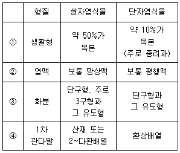
- ①
- ②
- ③
- ④
(정답률: 79%)
10. 체강에 관한 설명으로 옳지 않은 것은?
- 체강은 체벽과 소화관 사이의 있는 빈 곳을 말한다.
- 선형동물은 체벽과 내장 사이의 빈 곳에 중배엽성 세포가 부분적으로 배열되어 있다.
- 편형동물은 진체강을 형성하며 중배엽으로부터 기원된 세포가 배열되어 있다.
- 진체강은 체강을 둘러싸는 중배엽층의 발생양식에 따라 열체강과 장체강으로 나누기도 한다.
(정답률: 63%)
11. 관속식물에 속하지 않는 것은?
- 속새식물문
- 양치식물문
- 피자식물문
- 남조식물문
(정답률: 62%)
12. “Simpson은 한 분류군은 단계적인 분류의 어떤 단계에서 하나의 형식적인 단위로서 인식되며, 실재하는 생물들의 한 군이다. 또한 Mayr는 한 분류군은 한 특정한 카테고리에 할당됨에 만족하리 만큼 특이한 어떤 단계의 분류학적 군이다”에서 분류군이란 다음 중 무엇을 의미하는가?
- Kingdom
- Taxon(Taxa)
- Phylum
- Subphylum
(정답률: 68%)
13. 다음 중 국화아강에 속하지 않는 것은?
- 꿀풀과
- 물푸레나무과
- 꽃고비과
- 철쭉과
(정답률: 46%)
14. 다음 중 동물의 유생명이 아닌 것은?
- echiura
- nauplius
- trochophora
- planula
(정답률: 49%)
15. 자포동물문에 관한 설명으로 옳지 않은 것은?
- 유생은 플라눌라이다.
- 성체는 메두사형과 폴립형 중 하나를 취하고, 메두사형은 고착성이다.
- 산만신경계를 가진다.
- 위수강에서는 소화와 순환 기능을 모두 수행한다.
(정답률: 56%)
16. 다음 중 국제식물명명규약의 원칙적인 기준으로 옳지 않은 것은?
- 식물명명규약은 동물명명규약과 동일하게 정한다.
- 식물명명규약은 특별한 제한이 없는 한 소급력이 있다.
- 분류군의 명칭은 발표한 출판의 우선권에 따른다.
- 분류학적 군의 명칭 적용은 명명기준형에 준하여 결정한다.
(정답률: 76%)
17. 다음 중 환형동물의 일부 특징과 절지동물의 일부 특징을 가지고 있는 것은?
- 발톱벌레
- 혀벌레
- 곰벌레
- 끈벌레
(정답률: 52%)
18. 동물의 각 범주에 배치되는 분류군에는 학명이 주어진다. 다음 중 “과(family)"의 어미가 바르게 표기된 것은?
- Homininae
- Hominidae
- Hominoidea
- Hominini
(정답률: 75%)
19. 상동과 상사에 대한 다음 설명 중 틀린 것은?
- 상사는 외관이나 기능은 비슷하나 발생기원이 다른 기관을 말한다.
- 어류와 파충류의 비늘은 상사의 대표적인 예이다.
- 상동은 분류학에서 계통발생적 기원이 동일한 기관간의 관계를 말한다.
- 새와 나비의 날개는 상동의 대표적인 예이다.
(정답률: 70%)
20. 다음 중 십자화과 식물의 일반적 특징으로 옳지 않은 것은?
- 수술은 4개로 사강웅예이고, 꽃받침과 꽃잎이 4장씩 십자형으로 배열한다.
- 암술은 2심피가 합생한다.
- 열매는 단각과 또는 장각과로서, 열매가 갈라진 후에도 얇은 벽은 남는다.
- 배는 크고 유질이며, 배유는 거의 없다.
(정답률: 49%)
2과목: 환경생태학
21. 다음 중 유해폐기물의 국가간 이동 및 처리에 관한 사항을 골자로 한 국제적 협약(또는 의정서)에 해당하는 것은?
- 몬트리올 의정서
- 바젤협약
- CITES
- 리우환경협약
(정답률: 66%)
22. 다음 중 군집전체의 성질이나 기능에 중요한 역할을 하며, 군집의 에너지 흐름이나 생활환경을 크게 변화시킬 수 있는 종이며, 개체군의 크기가 큰 소수의 종일 일컫는 것은?
- 우점종
- 표징종
- 기초종
- 지수종
(정답률: 75%)
23. 호수나 하천의 부영양화에 의한 현상으로 거리가 먼 것은?
- 수소 순환과정 변화
- 수질의 색도 증가
- 수서생물의 종류 변화
- 화학적 산소요구량의 증가
(정답률: 70%)
24. 다음은 천이의 유형에 관한 설명이다. ( )안에 가장 적합한 것은?
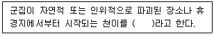
- 1차천이
- 2차천이
- 건생천이
- 수생천이
(정답률: 83%)
25. 생태계의 천이 및 안정성에 관한 설명으로 옳지 않은 것은?
- 1차천이에서 개척자 식물들은 뒤이어 오는 식물들의 정착을 용이하게 한다.
- 타생천이는 자생천이보다 변화예측이 어려운 편이다.
- 천이가 생물군집 내부의 작용에 의해 이루어질 경우 타생천이라 하며, 대부분의 경우 천이는 타생천이에 해당한다.
- 야산이 되어 버려진 농토나 개벌(皆伐)된 삼림군집 등은 2차천이에 해당한다.
(정답률: 67%)
26. 다음은 어떤 대기오염물질에 관한 설명인가?
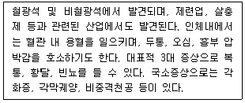
- 오존
- 수은
- 비소
- 카드뮴
(정답률: 57%)
27. 다음은 현존식생에 관한 설명이다. ( )안에 들어갈 용어로 가장 거리가 먼 것은?
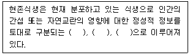
- 고식생(paleotic vegetation)
- 이차식생(secondary vegetation)
- 대상식생(substitute vegetation)
- 자연식생(natural vegetation)
(정답률: 78%)
28. 생태계의 에너지와 물질 흐름을 계단형 피라미드 구조로 이해하는데 있어 피라미드 내 영양단계의 특징과 변화에 관한 설명으로 옳지 않은 것은?
- 일반적으로 생태적 피라미드는 개체수, 생물량 크기의 경우 정삼각형 형태를 나타내고, 에너지 효율, 생물농축(농도)의 경우 역삼각형의 형태를 나타낸다.
- 생태적 피라미드는 각 영양단계별 개체수, 생물량, 에너지의 변화를 보여준다.
- 자연생태계의 각 먹이단계를 통한 에너지 효율의 감소는 궁극적으로 생태계의 영양단계의 수를 제한한다.
- 한 영양단계에서 다음 영양단계로 에너지가 전달되는 효율은 대략 약 50% 정도로 알려져 있다.
(정답률: 82%)
29. 역사적인 대기오염사건 중 런던형 스모그에 관한 설명으로 옳지 않은 것은?
- 화학반응은 환원반응이다.
- 주로 석탄계 연료에 의한 오염이며, SO2, 부유먼지 등이 주된 오염물질이었다.
- 침강성 역전이며, 가시거리가 약 1km정도이었다.
- 기온은 4℃이하, 습도는 85% 이상인 조건에서 잘 발생했다.
(정답률: 71%)
30. 초본식물이 우점하고 있는 단순한 지역으로서 아시아의 스텝, 아프리카의 벨트와 사바나가 대표적이며, 지구상의 다른 생물군계보다 많은 동물 개체군이 서식할 수 있는 지역은?
- 열대우림
- 차파렐
- 툰드라
- 초원
(정답률: 83%)
31. 다음 중 지구 온난화 유발물질과 가장 거리가 먼 것은?
- 메탄
- 이산화황
- 아산화질소
- 이산화탄소
(정답률: 69%)
32. 다음은 하천에 관한 설명이다. ( )안에 알맞은 용어는?
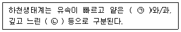
- ㉠ 소, ㉡ 삼각주
- ㉠ 여울, ㉡ 소
- ㉠ 소, ㉡ 여울
- ㉠ 삼각주, ㉡여울
(정답률: 83%)
33. 생태계에서의 영양소 순환에 관한 설명으로 옳지 않은 것은?
- 인과 칼슘의 순환은 물과 관련되어 일어난다.
- 암모니아 이온은 Nitrosomonas와 같은 박테리아에 의해 아질산염 형태로 전환된다.
- 질소고정 박테리아를 제외한 지구의 생물들은 대기 속의 질소를 직접 이용한다.
- 인산염은 수용성이므로 즉시 재순환하지만, 뼈, 이빨, 패각물질로 결합된 인산염은 풍화작용으로 서서히 방출된다.
(정답률: 86%)
34. 개체군 조절 메커니즘에 관한 설명으로 옳지 않은 것은?
- 개체군의 출생률과 사망률의 변화가 밀도에 영향을 받지 않는 것을 밀도-비의존효과(density-independent effect)라고 한다.
- 무생물적 조절은 보통 밀도-비의존적(density-independent)인 반면에 생물적 조절은 밀도-의존적(density-dependent)이다.
- 제한된 환경에서 환경수용능력 이상의 개체군은 밀도가 감소한다.
- 생태계 내에서 개체군의 밀도가 증가하면 자신에게 가해지는 압력이 감소한다.
(정답률: 85%)
35. 생태계의 특성에 관한 설명으로 옳지 않은 것은?
- 물질이동과정에서 토양, 유기물, 무기물 등 생태계 모든 성분이 관여하는데 이를 생물지화학적 순환이라고도 한다.
- 에너지 흐름은 화학에너지에서 태양에너지로 전환하며, 동물들에게 전달되어 운동에너지로서 발산되며, 재활용되어 회기한다.
- 생태계의 물질은 섭식관계를 기초로 하여 전달되며 재활용이 가능한 상태로 회귀한다.
- 생태계는 반드시 생물군집을 포함하여야 한다.
(정답률: 69%)
36. 개체군의 밀도조사를 절대밀도 조사법과 상대밀도 조사법으로 분류할 때, 다음 중 절대밀도 조사법에 해당하지 않는 것은?
- 전수조사
- 방형구법
- 표지-재포획법
- 빈도조사
(정답률: 76%)
37. 해양환경 및 해양생태계와 관련된 설명으로 옳지 않은 것은?
- 해류가 해수면 표면으로 솟아 흐르는 지역에서는 국지적으로 생산성이 높다.
- 해양생물의 지리적 분포는 주로 수온과 영양분에 의해 결정된다.
- 해양의 수직적 계층구조는 빛과 온도의 실질적인 차이에 의해 나타난다.
- 해류는 북반구에서는 반시계방향, 남반구에서는 시계방향으로 흐른다.
(정답률: 65%)
38. 자연환경에 인접한 다른 종 개체군 사이의 상호관계에 관한 설명으로 옳지 않은 것은?
- 기생 - 한 편은 이익을 얻고 다른 편은 해를 받음
- 경쟁 - 서로 다른 두 편이 서로에게 이익을 얻음
- 상리공생 - 두 개체군이 모두 이익을 얻으며 서로 상호작용을 하지 않으면 살 수 없음
- 편리공생 - 한 편은 이익을 얻는 반면 다른 편은 아무런 이해가 없음
(정답률: 88%)
39. 각 오염물질이 식물에 미치는 영향 등에 관한 설명으로 옳지 않은 것은?
- 일산화탄소는 고엽에 피해가 크며, 지표식물은 해바라기 등염, 10ppm 정도 이상에서 잎 뒷면에 갈색반점을 나타낸다.
- 불화수소는 어린 잎에 현저하며, 강한 식물로는 자주개나리, 시금치, 토마토 등이다.
- 아황산가스는 잎 뒤쪽 표피 밑 세포가 피해를 입기 시작하며, 지표식물로는 자주개나리, 보리, 담배 등이다.
- 황화수소는 어린 잎이나, 새싹에 피해가 많으며, 지표식물로는 코스모스, 클로바, 토마토 등이다.
(정답률: 66%)
40. 환경오염 또는 생태계 교란이 군집 구조에 미치는 일반적인 영향에 관한 설명으로 가장 거리가 먼 것은?
- r-전략종 비율의 감소
- 생물의 크기 감소
- 개체의 수명 단축
- 먹이연쇄가 짧아짐
(정답률: 68%)
3과목: 형태학
41. 다음은 포배의 유형에 관한 설명이다. ( )안에 알맞은 것은?
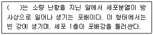
- 체강포배(유강낭배, coeloblastula)
- 무강포배(stereoblastula)
- 원반포배(반상낭배, discoblastula)
- 주변포배(periblastula)
(정답률: 70%)
42. 곤충의 소화기관은 전장, 중장, 후장 등으로 이루어져 있다. 이들 중 소화, 흡수가 주로 이루어지는 부위는?
- 전장
- 중장
- 후장
- 후장내막
(정답률: 68%)
43. 다음 중 엽상체가 아닌 식물은?
- 조류
- 균류
- 선태식물
- 유관속식물
(정답률: 57%)
44. 피자식물에서 중복수정이 이루어질 때, 밑씨의 구조 중 화분관이 들어오는 입구는?
- 주심
- 주병
- 주공
- 합점
(정답률: 80%)
45. 신경계에 관한 다음 설명 중 옳지 않은 것은?
- 능뇌는 척수와 연결되고, 뇌의 앞쪽 부분에 위치해 있으며, 일반적으로 의식적, 수의적 작용을 조절한다.
- 뇌교는 연수를 도와 호흡조절에도 관여한다.
- 소뇌는 연수의 위쪽에 있으며, 구형이며, 자세와 균형을 유지하는 일을 한다.
- 뇌의 가장 밑부분에 있는 연수는 호흡률, 심장박동, 혈압 등을 조절하는 중추이다.
(정답률: 63%)
46. 목재세포의 2차 벽내에 흔히 포함되는 물질로서, 화학물질이나 세균 등에 강한 저항력이 있고, 세포벽을 단단하게 하여 나무가 꼿꼿히 자라도록 버텨주는 것은?
- lignin
- cellulose
- glucoprotein
- suberin
(정답률: 63%)
47. 다음 중 동반세포(companion cell)의 기능을 가장 적절하게 설명한 것은?
- 식물체를 지탱하기 위한 구조적인 지지작용
- 동화작용의 산물인 starch의 저장작용
- 유관속내의 물과 무기염류의 수송
- 탄수화물을 사관절로 수송하는 일을 조절
(정답률: 69%)
48. 다음 중 석회질의 작은 골편이 두터운 체벽 근육 속에 흩어져 있으며, 수수목, 순수목, 무족목 등을 포함하는 분류군은?
- 해삼강
- 성게강
- 거미불가사리강
- 불가사리강
(정답률: 68%)
49. 동물의 소화계에 관한 설명으로 가장 거리가 먼 것은?
- 소장의 내벽은 융모와 미세융모를 통해 표면적을 넓힌다.
- 대장의 주 기능은 물과 무기염류의 흡수이다.
- 일반적으로 초식성 동물은 육식성 동물보다 몸체에 비해 소화관이 짧다.
- 간은 쓸개즙을 생성하고, 이자는 소화효소와 중탄산염이 풍부한 알칼리성 액체를 생산해낸다.
(정답률: 87%)
50. 잎의 횡단면에서 유관속 주위에 유관속초(bundle sheath)와 유조직이 동심원으로 세포가 둘러싸고 있는 크란쯔(Kranz) 구조와 기동세포(bulliform cell, motor cell)가 관찰되었다. 어느 식물의 잎인가?
- 개나리
- 소나무
- 호박
- 옥수수
(정답률: 74%)
51. 포유동물의 평형감각은 다음 중 어느 곳이 담당하는가?
- 내이
- 중이
- 외이
- 측선
(정답률: 65%)
52. 식물세포의 1차 세포벽 주요 구성요소로 거리가 먼 것은?
- cellulose
- lignin
- hemicellulose
- protein
(정답률: 52%)
53. 다음 ( )안에 알맞은 것은?
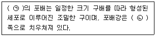
- ㉠ 조류, ㉡ 식물극
- ㉠ 조류, ㉡ 동물극
- ㉠ 개구리, ㉡ 식물극
- ㉠ 개구리, ㉡ 동물극
(정답률: 71%)
54. 날개를 가지고 있는 곤충(유시류)들 중 고시류(Palaeoptera)에 속하는 것은?
- 집게벌레목과 흰개미목
- 딱정벌레목과 부채벌레목
- 매미목과 메뚜기목
- 하루살이목과 잠자리목
(정답률: 91%)
55. 다음 중 쌍자엽식물의 배발생 유형으로 거리가 먼 것은?
- 십자화형
- 국화형
- 가지형
- 마디풀형
(정답률: 67%)
56. 다음 그림과 같은 화서의 유형은?
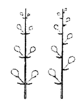
- 복산형화서
- 총상화서
- 원추화서
- 산방화서
(정답률: 65%)
57. 다음 중 결합조직(connective tissue)이 아닌 것은?
- 연골(cartilage)
- 뼈(bone)
- 표피(epidermis)
- 혈액(blood)
(정답률: 65%)
58. 뿌리의 내피(endodermis)에 관한 설명으로 옳지 않은 것은?
- 외피와 피층 조직 사이에 나타난다.
- 내피 바로 안쪽에는 내초가 발달한다.
- 세포벽의 방사측면과 횡측면에 비후부분인 카스파리띠가 있다.
- 내피세포들은 서로 단단히 붙어있고, 세포간극이 없다.
(정답률: 45%)
59. 식물의 중복수정에서 하나의 정세포와 2개의 극핵이 결합되어 생기는 것은?
- 2배체 접합자
- 4배체 접합자
- 2배체 초기 배젖핵
- 3배체 초기 배젖핵
(정답률: 67%)
60. 다음 ( )안에 알맞은 것은?
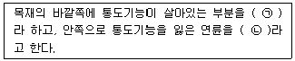
- ㉠ 연재, ㉡ 경재
- ㉠ 연재, ㉡ 심재
- ㉠ 변재, ㉡ 연재
- ㉠ 변재, ㉡ 심재
(정답률: 68%)
4과목: 보존 및 자원생물학
61. 정치, 경제, 사회, 생태적 압박 등과 관련한 생태보전 체제의 생물다양성 확보의 조건으로 거리가 먼 것은?
- 가능하면 보전지역을 많은 수로 유지하고, 보전지 규모를 크게 한다.
- 훼손에 의한 파국적 손실에 대비하여 중복을 많게 한다.
- 자연자원의 제한된 이용을 위하여 주변 완충지를 크게 늘린다.
- 종, 속, 군집과 지역 수준에서의 생물다양성 보호는 가능한 작은 분획의 집합체로 한다.
(정답률: 62%)
62. 동물원 등에서는 필요한 동물개체를 조달하기 위하여 해당 개체를 사육하여 조달하는 방법을 강구하여 자연에서의 개체를 조달하는 것을 막고 있다. 다음 중 사육종의 생식율을 높이기 위하여 동물원에서 사용하는 일반적인 기술과 가장 거리가 먼 것은?
- 양모 양육
- 인공 수정
- 배아 복제
- 인공 부화
(정답률: 81%)
63. 다음 중 육상의 생물군집에 있어서 종 풍부도의 증가요인으로 가장 거리가 먼 것은?
- 고도가 낮고 태양광선을 많이 받을수록
- 지형이 복잡할수록
- 지질학적 연령이 낮을수록
- 강우량이 많을수록
(정답률: 74%)
64. 다음은 개체군 보전에 관한 사항이다. ( )안에 들어갈 용어로 가장 적합한 것은?
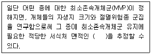
- 최대존속면적
- 최소존속면적
- 최소동태면적
- 최대동태면적
(정답률: 82%)
65. 후진국일수록 야생 동식물의 생산적 사용 가치(productive use value) 혹은 소비적 사용가치(consumptive use value)에 경제적으로 큰 비중을 두는 반면 선진국의 경우 유용한 동식물의 잠재적 가치를 고려해 생물종 보호에 많은 노력을 기울이고 있다. 다음 중 동식물 자원의 잠재적 가치가 가장 큰 경우는?
- 신약 개발과 신물질 합성
- 사료
- 연료용 목재
- 가죽과 섬유
(정답률: 90%)
66. DDT 또는 유기 염소계 살충제의 독성 성분이 먹이 사슬을 통해 상위 생물종의 체내에 고농도로 축척되는 현상을 의미하는 것은?
- Biomagnification
- Eutrophication
- Biodegradation
- Biochemical Oxygen Demand
(정답률: 59%)
67. 생물종과 군집 보호를 위한 우선순위의 기준으로 거리가 먼 것은?
- 차별성(distinctiveness)
- 위험성(endangerment)
- 발전성(development)
- 유용성(utility)
(정답률: 64%)
68. 도로개설, 초지조성, 택지개발, 도시형성 및 광범위한 인간의 건설 활동으로 서식처 자체가 분할되는 것을 무엇이라 하는가?
- habitat assessment
- habitat modelazation
- habitat infusion
- habitat fragmentation
(정답률: 71%)
69. 멸종되기 쉬운 종의 일반적인 특징으로 가장 거리가 먼 것은?
- 지리적 분포지역이 매우 협소하다.
- 개체군의 크기가 작다.
- 인간에게 경제적 가치가 크다.
- 몸체가 작다.
(정답률: 82%)
70. 지구의 기후 변화로 인한 생물다양성 감소의 직접적인 원인과 가장 거리가 먼 것은?
- 대기 중 CO2 농도의 증가
- 지구 온난화
- 해수면의 상승
- 토양오염
(정답률: 67%)
71. 유기염소 살충제가 먹이사슬을 거치며 축적되는 과정을 기술한 레이첼 카슨의 책은?
- 침묵의 봄
- 가이아
- 훌륭한 신세계
- 린네의 생태일기
(정답률: 87%)
72. 다음 중 멸종되기 쉬운 종이 아닌 것은?
- 지리적 분포범위가 넓은 종
- 개체군의 크기가 작은 종
- 개체군의 밀도가 낮은 종
- 계절적 이주종
(정답률: 69%)
73. 많은 동물종에서는 개체군의 크기가 일정 크기 아래로 떨어지면 사회적 구조가 기능할 수 없어 작은 개체군은 불안정해지는데 이를 일컫는 것과 가장 관련이 있는 것은?
- Alpha diversity
- Allee effect
- Extinction cascade
- Hybridization
(정답률: 70%)
74. 훼손된 생태계를 다루는 4가지 접근 방법에 관한 설명으로 가장 거리가 먼 것은?
- 방치는 복원비용이 너무 많이 들거나 예전의 복원 시도 노력이 실패하였을 때 스스로 회복될 가능성에 기초한 방법이다.
- 복원은 고유종 조성과 구조를 재도입하는 적극적인 방법이다.
- 회복은 최대한의 생태계 기능과 고유종을 완벽 복원하고자 하는 방법이다.
- 대체는 훼손된 생태계를 다른 생산적 생태계로 바꾸는 방법이다.
(정답률: 79%)
75. 관심있는 희귀종의 현황파악을 위해 사용되는 개체군의 감시에 관한 연구방법으로 가장 거리가 먼 것은?
- 개체군 내 개체들에 대한 생장, 생식, 생존률 조사
- 개체군안의 전체 개체수에 대한 주기적인 반복조사
- 군집안의 종의 밀도를 추정하기 위한 반복적인 표본추출
- 개체수 조사기간 동안의 단기적인 통계기록 조사
(정답률: 75%)
76. 개체군 수준의 효율적 보전을 위하여 설계 및 실행에 요구되는 개체생태학적 의문을 해결하기 위해 수집되어야 할 정보의 종류로 가장 거리가 먼 것은?
- 환경, 분포
- 생물적 상호작용, 외부형태, 유전
- 생리적 특성, 개체수, 행동습성
- 학명의 변천사, 경제적 가치
(정답률: 85%)
77. 자연계에서 볼 수 있는 개체군 내 개체들의 공간분포의 기본형과 거리가 먼 것은?
- 규칙적 분포
- 선형분포
- 임의분포
- 집중분포
(정답률: 69%)
78. 멸종위기에 처한 야생동·식물종의 국거래에 관한 협약을 의미하는 것은?
- WWF
- CITES
- CBD
- IUCN
(정답률: 72%)
79. 다음은 절멸위험종의 국제거래에 관한 협약에서 보호해야 할 종의 범주에 관한 설명이다. ( )안에 가장 적합한 것은?
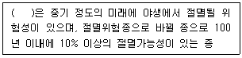
- 근취약종(near threatened)
- 취약종(Vulnerable)
- 보존의존종(Conservation dependent)
- 최소위협종(least concern)
(정답률: 74%)
80. 서식처 단편화의 영향으로 거리가 먼 것은?
- 산불이 일어날 확률이 감소된다.
- 분할된 지역에 외래종이나 토착 병원균 종류들이 침입할 가능성이 높아진다.
- 종이 확산되고 정착하는 능력을 제한한다.
- 그 지역 토착 동물의 먹이 획득 능력을 약화시킬 수 있다.
(정답률: 82%)
5과목: 자연환경관계법규
81. 농지법규상 농지전용허가신청서에 첨부하여야 할 서류로 가장 거리가 먼 것은?
- 전용목적, 시설물의 활용계획 등을 명시한 농지전용신고서
- 전용예정구역이 표시된 지적도 등본 또는 임야도 등본과 지형도
- 해당농지의 전용이 농지개량시설 또는 도로의 폐지 및 변경이나 토사의 유출, 폐수의 배출, 악취의 발생 등을 수반하여 인근 농지의 농업경영과 농어촌 생활환경의 유지에 피해가 예상되는 경우에는 대체시설의 설치 등 피해방지계획서
- 전용하려는 농지의 소유권을 입증하는 서류(토지등기사항 증명서로 확인할 수 없는 경우에 한정한다) 또는 사용승낙서·사용승낙의 뜻이 기재된 매매계약서 등 사용권을 가지고 있음을 입증하는 서류
(정답률: 49%)
82. 다음은 자연공원법규상 공원관리청이 규정에 의해 징수하는 점용료 등의 기준요율에 관한 사항이다. ( )안에 알맞은 것은?
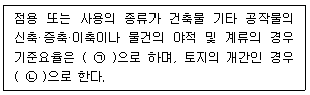
- ㉠ 인근 토지 임대료 추정액의 100분의 25 이상
㉡ 수확예상액의 100분의 10 이상 - ㉠ 인근 토지 임대료 추정액의 100분의 25 이상
㉡ 수확예상액의 100분의 25 이상 - ㉠ 인근 토지 임대료 추정액의 100분의 50 이상
㉡ 수확예상액의 100분의 10 이상 - ㉠ 인근 토지 임대료 추정액의 100분의 50 이상
㉡ 수확예상액의 100분의 25 이상
(정답률: 63%)
83. 다음은 농지법령상 농지보전부담금의 부과기준이다. ( )안에 알맞은 것은?
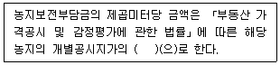
- 100분의 5
- 100분의 10
- 100분의 20
- 100분의 30
(정답률: 49%)
84. 다음은 국토의 계획 및 이용에 관한 법률상 용어의 뜻이다. ( )안에 가장 적합한 것은?
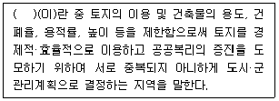
- 용도지역
- 용도지구
- 용도구역
- 개발밀도관리구역
(정답률: 58%)
85. 습지보전법상 습지보호지역에서 정당한 사유없이 돌 등을 채취하는 행위로 인해 받은 행위중지의 명령을 위반한 자에 대한 벌칙기준으로 옳은 것은?
- 3년 이하의 징역 또는 2천만원 이하의 벌금에 처한다.
- 2년이하의 징역 또는 1천만원 이하의 벌금에 처한다.
- 500만원 이하의 과태료에 처한다.
- 200만원 이하의 과태료에 처한다.
(정답률: 69%)
86. 산지관리법상 보전산지 중 공익용산지에 포함되지 않는 산지는?
- 산림문화·휴양에 관한 법률에 따른 자연휴양림의 산지
- 임업 및 산촌 진흥촉진에 관한 법률에 의한 임업진흥권역의 산지
- 수도법에 따른 상수원보호구역의 산지
- 자연공원법에 따른 공원구역의 산지
(정답률: 59%)
87. 자연환경보전법령상 생태계보전협력금은 생태계의 훼손면적에 단위면적당 부과금액과 지역계수를 곱하여 산정·부과한다. 이 때 지역별 계수로 옳은 것은?
- 농림지역 : 2
- 생산관리지역 : 2.5
- 녹지지역 : 3.5
- 보전관리지역 : 4
(정답률: 61%)
88. 환경정책기본법령상 대기환경기준으로 옳지 않은 것은?
- 일산화탄소(CO) : 1시간 평균치 25ppm 이하
- 이산화질소(NO2) : 24시간 평균치 0.06ppm 이하
- 오존(O3) : 1시간 평균치 0.1ppm 이하
- 벤젠 : 연간 평균치 0.5μg/m3 이하
(정답률: 54%)
89. 다음은 국토의 계획 및 이용에 관한 법률 시행령에서 용도지역 중 주거지역의 세분사항이다. ( )안에 알맞은 것은?
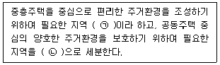
- ㉠ 제2종전용주거지역, ㉡ 제3종일반주거지역
- ㉠ 제3종일반주거지역, ㉡ 제2종전용주거지역
- ㉠ 제3종전용주거지역, ㉡ 제2종일반주거지역
- ㉠ 제2종일반주거지역, ㉡ 제2종전용주거지역
(정답률: 62%)
90. 백두대간 보호에 관한 법률 시행령상 보호지역 중 완충구역에서의 허용행위에 관한 기준이다. ( )안에 알맞은 것은?
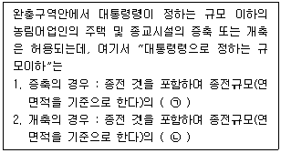
- ㉠ 100분의 150, ㉡ 100분의 100
- ㉠ 100분의 100, ㉡ 100분의 150
- ㉠ 100분의 130, ㉡ 100분의 100
- ㉠ 100분의 100, ㉡ 100분의 130
(정답률: 60%)
91. 국토기본법에 명시된 “환경친화적 국토관리”를 위하여 국가 및 지방자치단체가 해야 할 일로 가장 거리가 먼 것은?
- 국토에 관한 계획 또는 사업을 수립·집행할 때에는 자연환경과 생활환경에 미치는 영향을 사전에 고려하여야 하며, 환경에 미치는 부정적인 영향이 최소화될 수 있도록 하여야 한다.
- 국토의 무질서한 개발을 방지하고 국민생활에 필요한 토지를 원활하게 공급하기 위하여 토지이용에 관한 종합적인 계획을 수립하고 이에 따라 국토공간을 체계적으로 관리하여야 한다.
- 산, 하천, 호수, 늪, 연안, 해양으로 이어지는 자연생태계를 통합적으로 관리·보전하고 훼손된 자연생태계를 복원하기 위한 종합적인 시책을 추진한다.
- 국제교류가 활발히 이루어질 수 있는 국토여건을 조성함으로써 대륙과 해양을 잇는 국토의 지리적 특성이 최대한 발휘되도록 하여야 한다.
(정답률: 60%)
92. 다음은 습지보전법령상 국가습지심의위원회의 구성 및 운영 등에 관한 사항이다. ( )안에 가장 적합한 것은?
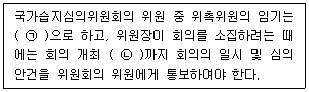
- ㉠ 2년, ㉡ 7일전
- ㉠ 3년, ㉡ 7일전
- ㉠ 2년, ㉡ 14일전
- ㉠ 3년, ㉡ 14일전
(정답률: 42%)
93. 야생생물 보호 및 관리에 관한 법률 시행규칙상 멸종위기 야생동물 Ι급(조류)에 해당하지 않는 것은?
- 흰꼬리수리 Haliaeetus albicilla
- 황새 Ciconia boyciana
- 검은머리갈매기 Larus saundersi
- 매 Falco peregrinus
(정답률: 67%)
94. 자연환경보전법규상 시·도지사 또는 지방환경관서의 장이 환경부장관에게 보고해야 할 위임업무 보고사항 중 “생태마을의 지정실적” 보고횟수 기준은?
- 연 1회
- 연 2회
- 연 4회
- 수시
(정답률: 72%)
95. 자연공원법상 특별히 보호할 필요가 있는 지역의 공원자연보존지구의 결정과 관련한 사항으로 가장 거리가 먼 것은?
- 생물다양성이 특히 풍부한 곳
- 자연생태계가 원시성을 지니고 있는 곳
- 마을이 형성된 지역으로서 주민생활을 유지하는 데에 필요한 지역
- 특별히 보호할 가치가 높은 야생 동식물이 살고 있는 곳
(정답률: 70%)
96. 산지관리법상 “산지전용·일시사용제한지역”으로 지정될 수 있는 산지로 가장 거리가 먼 것은?
- 주요 산줄기의 능선부로서 자연경관 및 산림생태계의 보전을 위해 필요하다고 인정되는 산지
- 지역주민의 임산물 소득 보전을 위해 필요한 산지
- 명승지, 유적지, 그 밖에 역사적·문화적으로 보전할 가치가 있다고 인정되는 산지
- 산사태 등 재해발생이 특히 우려되는 산지
(정답률: 75%)
97. 환경정책기본법령상 국토의 계획 및 이용에 관한 법률에 따른 주거지역 중 전용주거지역의 밤(22:00~06:00)시간대 소음환경기준은?
- 40
- 45
- 50
- 55
(정답률: 68%)
98. 독도 등 도서지역의 생태계 보전에 관한 특별법 시행규칙상 환경부장관이 이 법에 따라 특정도서를 지정하거나 해제·변경한 경우에는 지정일 또는 해제·변경일부터 얼마이내(기준)에 관보에 이를 고시하여야 하는가?
- 5일 이내에
- 10일 이내에
- 15일 이내에
- 30일 이내에
(정답률: 36%)
99. 자연공원법상 용어의 뜻 중 “자연공원”에 속하지 않는 것은?
- 국립공원
- 도립공원
- 시립공원
- 지질공원
(정답률: 72%)
100. 독도 등 도서지역의 생태계 보전에 관한 특별법상 특정도서에서 인화물질을 이용하여 음식물을 조리하거나 야영을 한 자에 대한 과태료 부과기준으로 옳은 것은?
- 100만원 이하의 과태료를 부과한다.
- 300만원 이하의 과태료를 부과한다.
- 500만원 이하의 과태료를 부과한다.
- 1천만원 이하의 과태료를 부과한다.
(정답률: 35%)